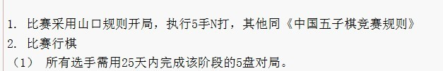

［ 江西g云格格 于 2012-6-24 14:56:02 时花20金币送鲜花一朵］
［ 江西g云格格 于 2012-6-24 14:56:02 时花20金币送鲜花一朵］
［ 江西g云格格 于 2012-6-24 14:56:02 时花20金币送鲜花一朵］
［ 江西g云格格 于 2012-6-24 14:56:02 时花20金币送鲜花一朵］
［ 江西g云格格 于 2012-6-24 14:56:02 时花20金币送鲜花一朵］
［ 江西g云格格 于 2012-6-24 14:56:02 时花20金币送鲜花一朵］
不是一局棋， 是每人每盘都有25天的时间， 怎么利用要看你自己。
简单点就是谁先用完自己的25天时限，谁就输。
不知道是不是组织方发通告的时候表达有问题还是怎么地， 有部分人都误会了。。

我看问题可能出在（1）。 这么看的话， 误解可以理解。
［此帖子已被 踵酃 在 2012-6-24 8:23:02 编辑过］
哈哈，原来是这样，我以前也稀里糊涂，现在看到这个帖子，我也明白了。
谢谢哦。
［此帖子已被 木瓜笨 在 2012-6-24 8:36:01 编辑过］
没有明白楼上的意思哦
 。。。
。。。